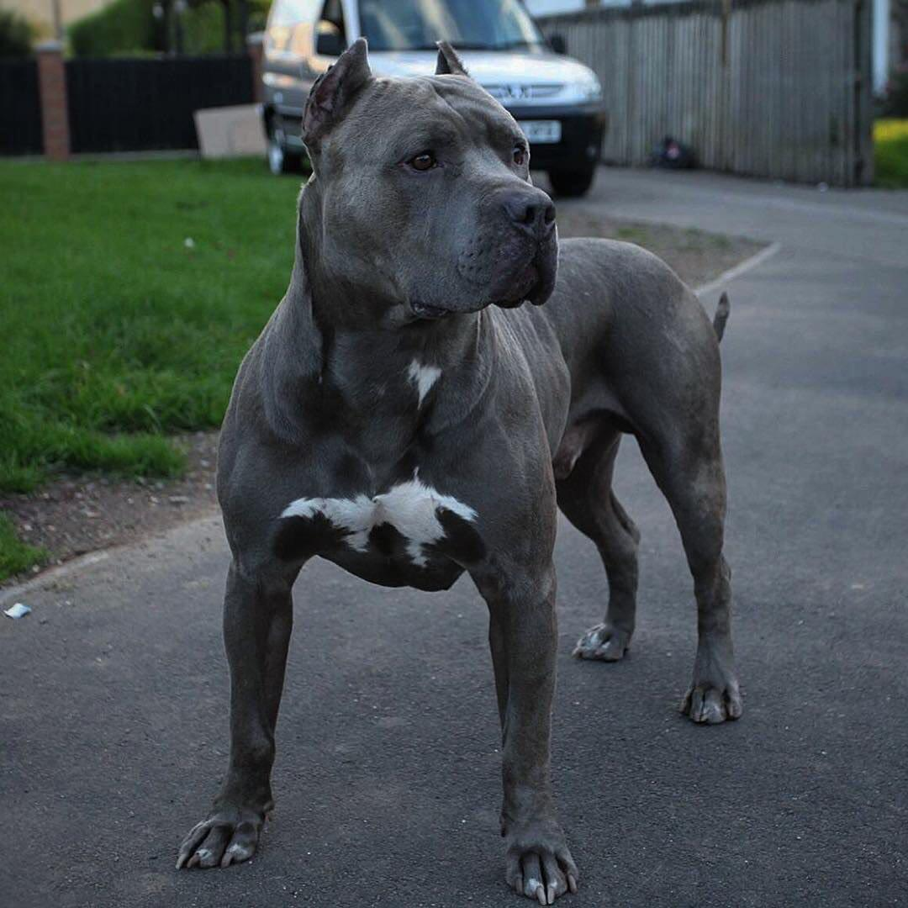

| Зріст | 46—48 см пес | 43—46 см сука |
| Вага | 18-30 кг | |
| Тип | Cлужбові | |
| Основні риси |
|
Американський стафордшир-тер'єр — порода собак середнього зросту, ранні предки якої походять з Англії, належить до групи тер'єрів. Порода отримала розповсюдження на початку ХХ сторіччя, та згодом була визнана Американським клубом собаківництва. Собаки даної породи універсальні. В наш час найчастіше використовуються як домашні компанійські собаки, собаки-сторожі, собаки на службі в поліції, собаки-пастухи, та в інших цілях. Розповсюджені також неофіційні назви породи: стаф; амстаф; амстафорд, та інші.
 Зовнішній вигляд.Американський стафордшир-тер'єр має справляти враження собаки великої для своїх розмірів сили, м'язистої, але в той же час елегантної, моторної, та дуже живо реагуючої на оточуюче. Американський стафордшир-тер'єр в своїх обрисах повинен бути кремезним, не довгоногим чи хортоподібним.
Голова.Середньої довжини, глибока, широка, з чітко вираженими м'язами та виразним переходом від лоба до морди.
Вуха посаджені високо.
Очі темні, округлі, глибоко посаджені та широко розставлені. Рожеві віки недопустимі.
Мордасередньої довжини з чітким переходом до черепної частини. Спинка носа заокруглена.
Щелепичітко окреслені. Міцна нижня щелепа забезпечує потужність захвату.
Губи щільні, такі, що прилягають, не відвислі.
Нісобов'язково чорний.
Живітдещо підтягнутий.
Корпус.